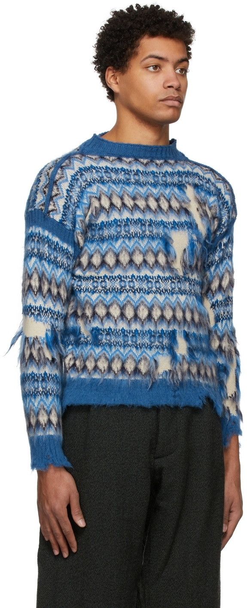
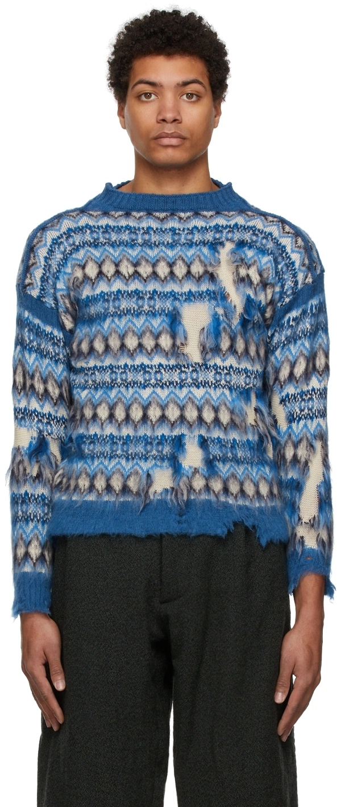
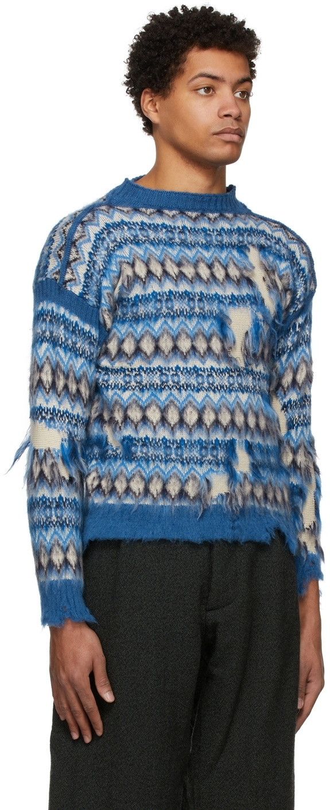
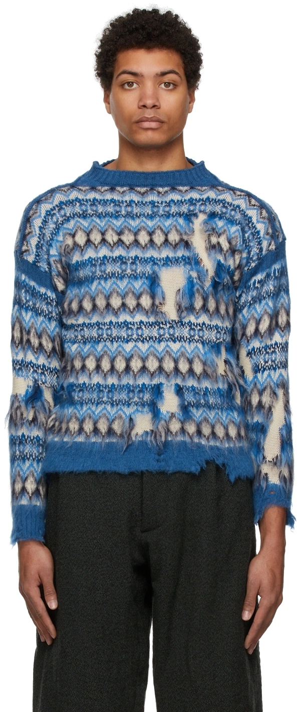

Matière / composition
La matière première est une fibre naturelle d’origine végétale, très probablement du coton. Cette hypothèse est confirmée par le test de brûlage, montrant une combustion lente, une flamme persistante et une odeur marquée de papier brûlé, caractéristiques des fibres cellulosiques.
Fil
La maille est réalisée avec des fils retors.
Construction textile
Il s’agit d’un textile en maille.
Le tricotage est réalisé en maille trame.
Liage
Le liage est une maille cueillie jacquard sur base de jersey.
Les motifs sont obtenus par sélection de certaines aiguilles lors du tricotage, avec alternance de fils de différentes couleurs. Le dessin est intégré directement dans la structure de la maille, sans ajout de trame rapportée.
Ennoblissement couleur
La coloration est réalisée par teinture du fil avant tricotage.
Ennoblissement d’apprêt
- Le tissu présente un apprêt d’assouplissement, améliorant le confort et la main
- Un apprêt stabilisant peut également être présent afin de limiter la déformation et d’améliorer la tenue dimensionnelle de la maille après lavage.
Poids
Le poids est moyen à lourd, estimé entre 280 et 400 g/m², typique des mailles destinées à l’habillement chaud.
Produit fini
Ce type de maille cueillie jacquard est utilisé dans des pièces de prêt-à-porter haut de gamme, notamment des pulls et cardigans. On retrouve des exemples comparables dans les collections de Maison Margiela, comme le pull jacquard présenté lors du défilé Automne-Hiver 2019/2020.
Voir produit

 


